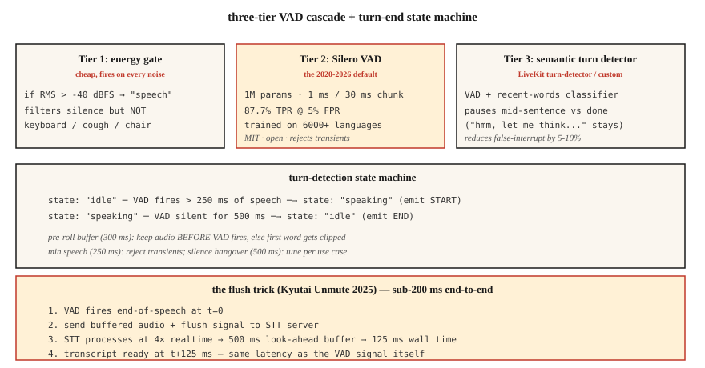

Voice Activity Detection & Turn-Taking — Silero, Cobra, and the Flush Trick
Every voice agent lives or dies on two decisions: is the user speaking now, and are they done? VAD answers the first. Turn-detection (VAD + silence-hangover + semantic endpoint model) answers the second. Get either wrong and your assistant either cuts users off or never shuts up.
- Type
- Build
- Languages
- Python
- Prerequisites
- Phase 6 · 11 (Real-Time Audio), Phase 6 · 12 (Voice Assistant)
- Time
- ~45 minutes
#The Problem
Three distinct decisions a voice agent makes on every 20 ms chunk:
- Is this frame speech? — VAD. Binary, per-frame.
- Has the user started a new utterance? — onset detection.
- Has the user finished? — end-pointing (turn-end).
The naive answer (energy threshold) fails on any noise — traffic, keyboards, crowd babble. The 2026 answer: Silero VAD (open, deep-learned) + a turn-detection model (semantic endpointing) + a VAD-calibrated silence hangover.
#The Concept

#The three-tier VAD cascade
Tier 1: energy gate. Cheapest. Threshold RMS at -40 dBFS. Filters obvious silence but fires on any noise above the threshold.
Tier 2: Silero VAD (2020-2026, MIT). 1M parameters. Trained on 6000+ languages. Runs in ~1 ms per 30 ms chunk on a single CPU thread. 87.7% TPR at 5% FPR. The open-source default.
Tier 3: semantic turn detector. LiveKit's turn-detection model (2024-2026) or your own small classifier. Distinguishes "pause mid-sentence" from "done talking." Uses linguistic context (intonation + recent words), not just silence.
#Key parameters and their defaults
- Threshold. Silero outputs a probability; classify speech at > 0.5 (default) or > 0.3 (sensitive). Lower threshold = fewer first-word clips, more false positives.
- Minimum speech duration. Reject speech shorter than 250 ms — usually coughs or chair noise.
- Silence hangover (end-pointing). After VAD returns to 0, wait 500-800 ms before declaring end-of-turn. Too short → interrupt user. Too long → feels sluggish.
- Pre-roll buffer. Keep 300-500 ms of audio before VAD fires. Prevents "hey" being clipped.
#The flush trick (Kyutai 2025)
Streaming STT models have a look-ahead delay (500 ms for Kyutai STT-1B, 2.5 s for STT-2.6B). Normally you'd wait that long after end-of-speech for the transcript. Flush trick: when VAD fires end-of-speech, send a flush signal to the STT that forces immediate output. STT processes at ~4× realtime, so the 500 ms buffer finishes in ~125 ms.
End-to-end: 125 ms VAD + flush STT = conversational latency.
#2026 VAD comparison
| VAD | TPR @ 5% FPR | Latency | License |
|---|---|---|---|
| WebRTC VAD (Google, 2013) | 50.0% | 30 ms | BSD |
| Silero VAD (2020-2026) | 87.7% | ~1 ms | MIT |
| Cobra VAD (Picovoice) | 98.9% | ~1 ms | commercial |
| pyannote segmentation | 95% | ~10 ms | MIT-ish |
Silero is the right default. Cobra is the compliance / accuracy upgrade. Energy-only VAD has no place in 2026 production.
#Build It
#Step 1: the energy gate
def energy_vad(chunk, threshold_dbfs=-40.0):
rms = (sum(x * x for x in chunk) / len(chunk)) ** 0.5
dbfs = 20.0 * math.log10(max(rms, 1e-10))
return dbfs > threshold_dbfs#Step 2: Silero VAD in Python
from silero_vad import load_silero_vad, get_speech_timestamps
vad = load_silero_vad()
audio = torch.tensor(waveform_16k, dtype=torch.float32)
segments = get_speech_timestamps(
audio, vad, sampling_rate=16000,
threshold=0.5,
min_speech_duration_ms=250,
min_silence_duration_ms=500,
speech_pad_ms=300,
)
for s in segments:
print(f"{s['start']/16000:.2f}s - {s['end']/16000:.2f}s")#Step 3: turn-end state machine
class TurnDetector:
def __init__(self, silence_hangover_ms=500, min_speech_ms=250):
self.state = "idle"
self.speech_ms = 0
self.silence_ms = 0
self.silence_hangover_ms = silence_hangover_ms
self.min_speech_ms = min_speech_ms
def update(self, is_speech, chunk_ms=20):
if is_speech:
self.speech_ms += chunk_ms
self.silence_ms = 0
if self.state == "idle" and self.speech_ms >= self.min_speech_ms:
self.state = "speaking"
return "START"
else:
self.silence_ms += chunk_ms
if self.state == "speaking" and self.silence_ms >= self.silence_hangover_ms:
self.state = "idle"
self.speech_ms = 0
return "END"
return None#Step 4: the flush trick skeleton
def flush_on_end(stt_client, audio_buffer):
stt_client.send_audio(audio_buffer)
stt_client.send_flush()
return stt_client.recv_transcript(timeout_ms=150)STT (Kyutai, Deepgram, AssemblyAI) must support flush for this to work. Whisper streaming does not — it's block-based and always waits for chunks.
#Use It
| Situation | VAD choice |
|---|---|
| Open, fast, general | Silero VAD |
| Commercial call center | Cobra VAD |
| On-device (phone) | Silero VAD ONNX |
| Research / diarization | pyannote segmentation |
| Zero-dependency fallback | WebRTC VAD (legacy) |
| Need turn-ending quality | Silero + LiveKit turn-detector layered |
Rule of thumb: never ship energy-only VAD unless you really have no other option.
#Pitfalls
- Fixed threshold. Works in quiet, fails in noisy. Either calibrate on-device or switch to Silero.
- Too-short silence hangover. Agent interrupts mid-sentence. 500-800 ms is the sweet spot for conversational speech.
- Too-long hangover. Feels sluggish. A/B test with target users.
- No pre-roll buffer. First 200-300 ms of user audio lost. Always keep a rolling pre-roll.
- Ignoring semantic endpointing. "Hmm, let me think..." contains long pauses. Users hate being cut off mid-thought. Use LiveKit's turn-detector or similar.
#Ship It
Save as outputs/skill-vad-tuner.md. Pick VAD model, threshold, hangover, pre-roll, and turn-detection strategy for a workload.
#Exercises
- Easy. Run
code/main.py. It simulates a speech + silence + speech + coughs sequence and tests three VAD tiers. - Medium. Install
silero-vad, process a 5-min recording, tune threshold to minimize both first-word clips and false triggers. Report precision/recall. - Hard. Build a mini turn-detector: Silero VAD + a 3-layer MLP on the last 10 words' embeddings (use sentence-transformers). Train on a hand-labeled turn-end dataset. Beat Silero-only by 10% F1.
#Key Terms
| Term | What people say | What it actually means |
|---|---|---|
| VAD | Voice detector | Binary per-frame: is this speech? |
| Turn detection | End-pointing | VAD + silence-hangover + semantic endpoint. |
| Silence hangover | Wait-after-speech | Time to wait before declaring turn end; 500-800 ms. |
| Pre-roll | Pre-speech buffer | Keep 300-500 ms audio before VAD fires. |
| Flush trick | Kyutai hack | VAD → flush-STT → 125 ms instead of 500 ms delay. |
| Semantic endpoint | "Did they mean to stop?" | ML classifier that looks at words, not just silence. |
| TPR @ FPR 5% | ROC point | Standard VAD benchmark; 87.7% for Silero, 50% WebRTC. |
#Further Reading
- Silero VAD — the reference open VAD.
- Picovoice Cobra VAD — commercial accuracy leader.
- Kyutai — Unmute + flush trick — the sub-200 ms engineering trick.
- LiveKit — turn detection — semantic endpointing in production.
- WebRTC VAD — the legacy baseline.
- pyannote segmentation — diarization-grade segmentation.
Nice. That's 4 minutes of Speech & Audio behind you.
Continue to Streaming Speech-to-Speech — Moshi, Hibiki, and Full-Duplex Dialogue →